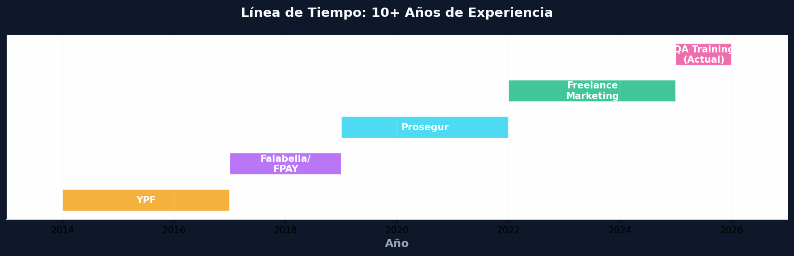
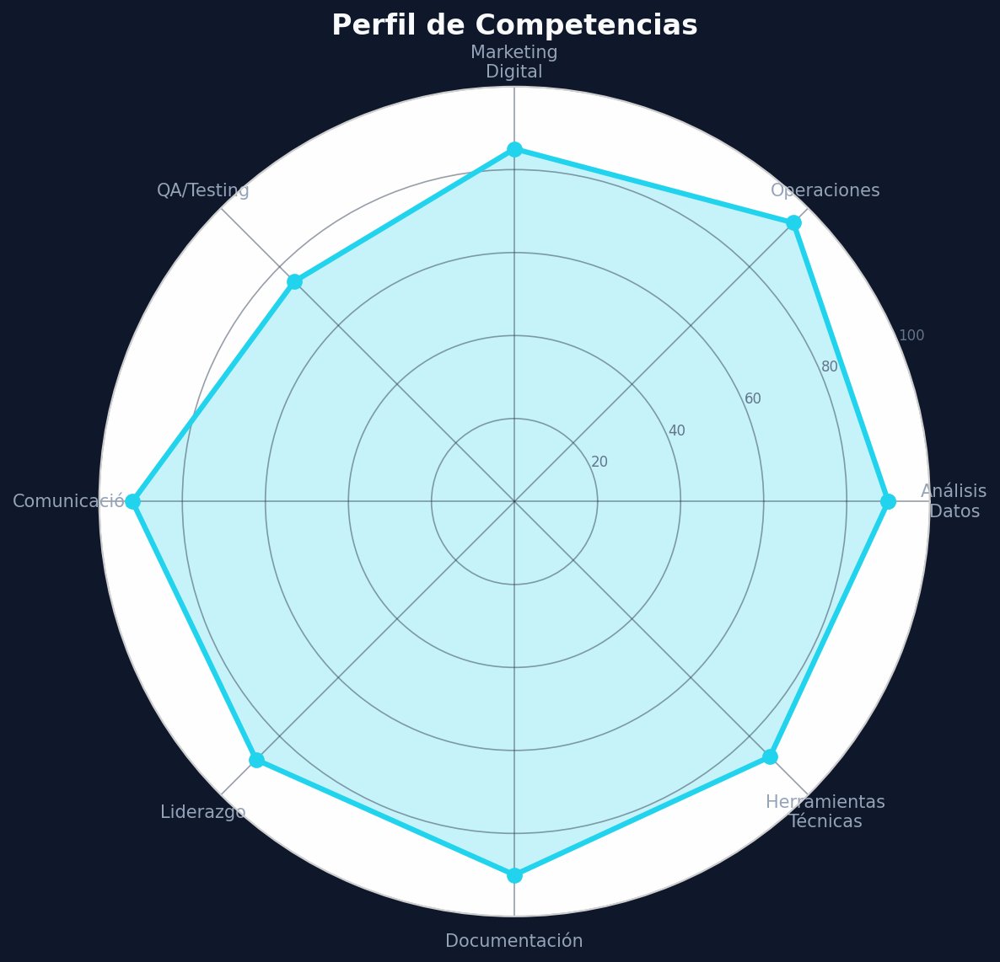
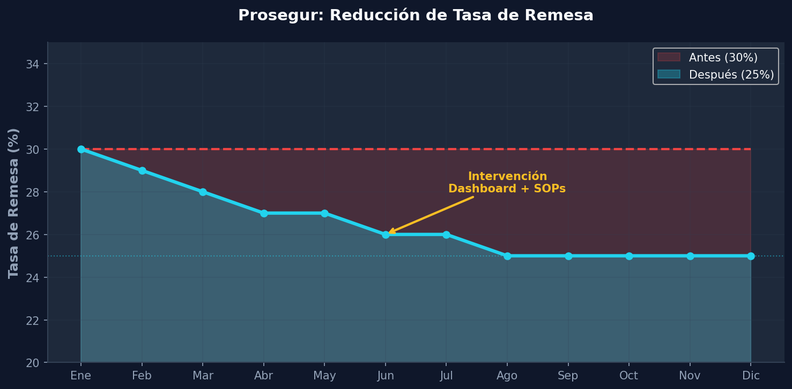
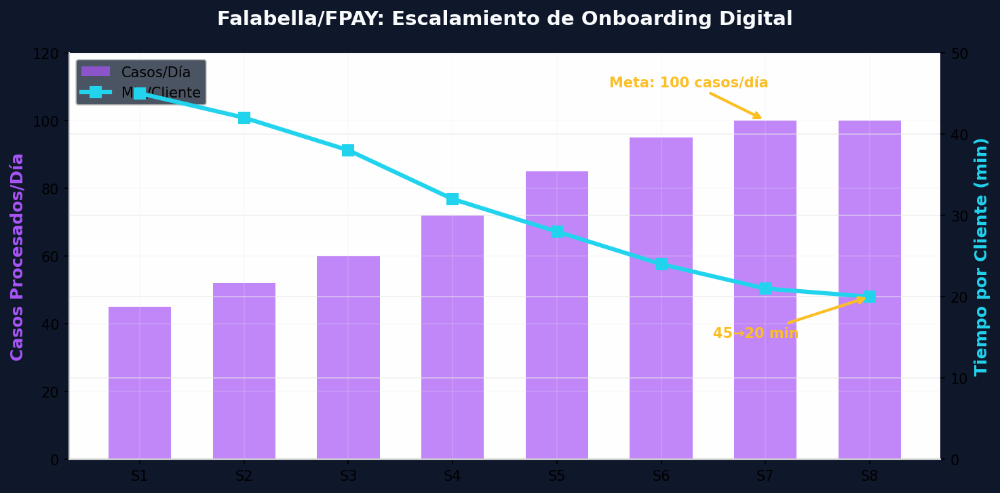
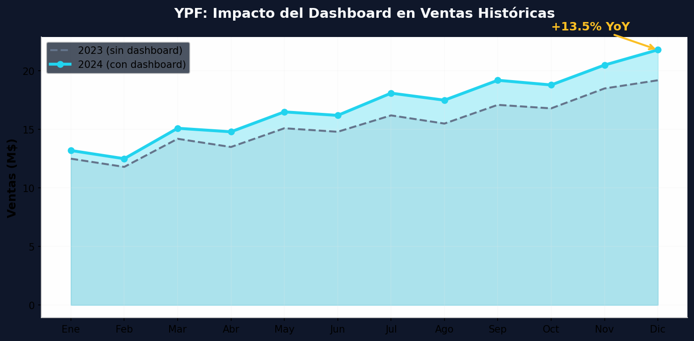
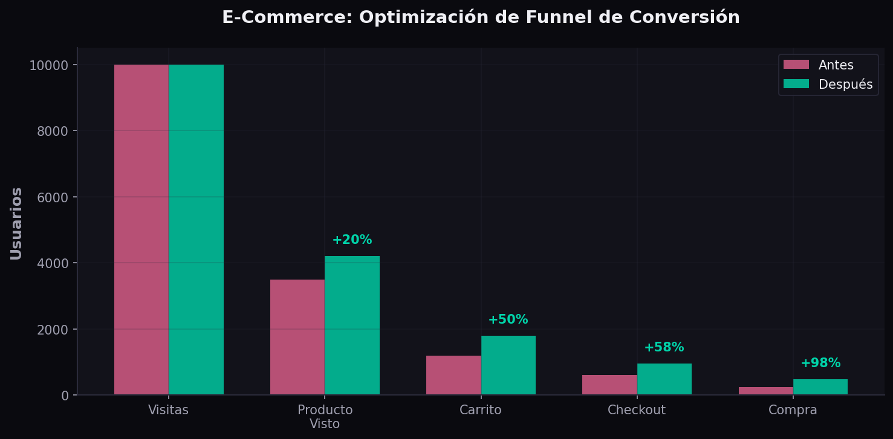
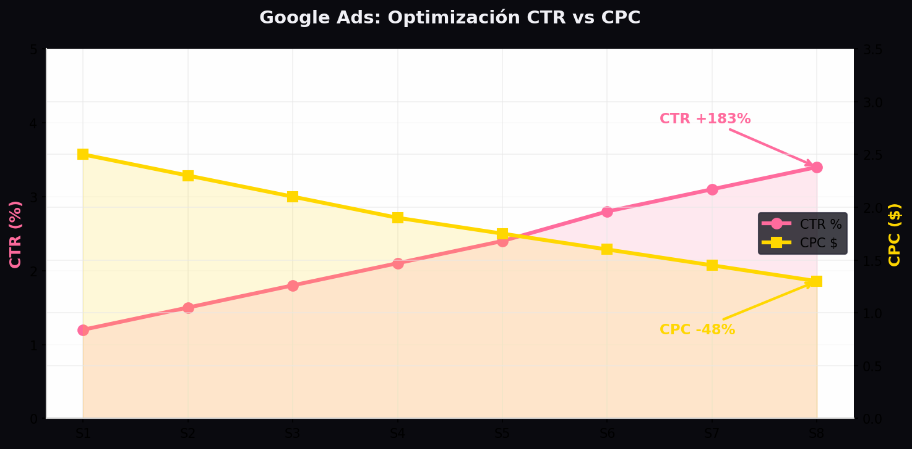
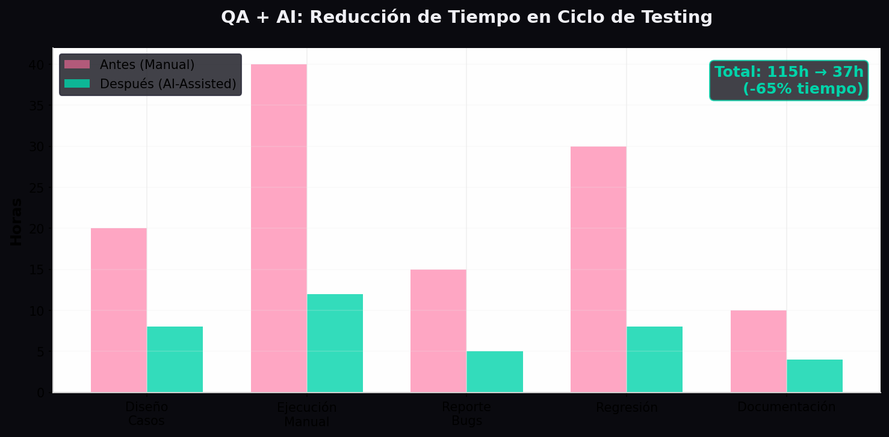

Analista de Operaciones + Comunicadora Estratégica Operations Analyst + Strategic Communicator Analista di Operazioni + Comunicatrice Strategica
Profesional con 10+ años de experiencia combinando análisis de operaciones, comunicación estratégica y marketing digital. Transformo datos complejos en decisiones accionables y conecto con personas con empatía y fluidez. Nativa en español, intermedio-avanzado en inglés e intermedio en italiano. Professional with 10+ years of experience combining operations analysis, strategic communication and digital marketing. I transform complex data into actionable decisions and connect with people with empathy and fluency. Native Spanish, upper-intermediate English and intermediate Italian. Professionista con oltre 10 anni di esperienza che combina analisi delle operazioni, comunicazione strategica e marketing digitale. Trasformo dati complessi in decisioni actionable e mi connetto con le persone con empatia e fluidità. Madrelingua spagnola, inglese intermedio-avanzato e italiano intermedio.
Con más de 10 años de experiencia en operaciones y comunicación, he desarrollado una habilidad única: transformar datos complejos en decisiones claras y conectar con personas con empatía y fluidez.
With over 10 years of experience in operations and communication, I have developed a unique skill: transforming complex data into clear decisions and connecting with people with empathy and fluency.
Con oltre 10 anni di esperienza nelle operazioni e nella comunicazione, ho sviluppato un'abilità unica: trasformare dati complessi in decisioni chiare e connettermi con le persone con empatia e fluidità.
He trabajado con marcas líderes como YPF, Falabella, Prosegur y startups en crecimiento, liderando equipos remotos multiculturales y optimizando procesos que impactan directamente en el resultado de negocio.
I have worked with leading brands such as YPF, Falabella, Prosegur and growing startups, leading multicultural remote teams and optimizing processes that directly impact business results.
Ho lavorato con marchi leader come YPF, Falabella, Prosegur e startup in crescita, guidando team remoti multiculturali e ottimizzando processi che impattano direttamente sui risultati di business.
Hoy combino mi background en operaciones con mi formación en growth marketing y QA testing para ofrecer una propuesta de valor integral.
Today I combine my background in operations with my training in growth marketing and QA testing to offer a comprehensive value proposition.
Oggi combino il mio background in operazioni con la mia formazione in growth marketing e QA testing per offrire una proposta di valore integrale.
Stack técnico actualizado con las herramientas más demandadas en 2026
Updated technical stack with the most in-demand tools in 2026
Stack tecnico aggiornato con gli strumenti più richiesti nel 2026


Casos reales de empresas donde trabajé, aplicando el método STAR
Real cases from companies I worked for, applying the STAR method
Casi reali di aziende per cui ho lavorato, applicando il metodo STAR
Prosegur operaba con una tasa de remesa del 30% en procesos de cash management, generando pérdidas significativas. No existía visibilidad en tiempo real ni estandarización de procesos.
Prosegur operated with a 30% remittance rate in cash management processes, generating significant losses. There was no real-time visibility or process standardization.
Prosegur operava con un tasso di rimessa del 30% nei processi di cash management, generando perdite significative. Non esisteva visibilità in tempo reale né standardizzazione dei processi.
Diseñé dashboards en Excel avanzado, documenté flujos en Confluence, y coordiné equipos remotos vía Jira. Implementé validaciones automáticas y alertas de anomalías.
I designed dashboards in advanced Excel, documented flows in Confluence, and coordinated remote teams via Jira. I implemented automatic validations and anomaly alerts.
Ho progettato dashboard in Excel avanzato, documentato flussi in Confluence e coordinato team remoti via Jira. Ho implementato validazioni automatiche e alert anomalie.
Reducción del 30% al 25% en tasa de remesa, cero errores de cash-out, y visibilidad en tiempo real para dirección ejecutiva mediante dashboards semanales.
Reduction from 30% to 25% in remittance rate, zero cash-out errors, and real-time visibility for executive management through weekly dashboards.
Riduzione dal 30% al 25% nel tasso di rimessa, zero errori cash-out e visibilità in tempo reale per la direzione esecutiva attraverso dashboard settimanali.

El onboarding de clientes para la billetera digital FPAY era manual y no escalaba. Con crecimiento acelerado, el equipo no podía mantener calidad ni tiempos de respuesta.
Customer onboarding for the FPAY digital wallet was manual and didn't scale. With accelerated growth, the team couldn't maintain quality or response times.
L'onboarding dei clienti per il portafoglio digitale FPAY era manuale e non scalava. Con la crescita accelerata, il team non riusciva a mantenere qualità e tempi di risposta.
Documenté flujos en Jira/Confluence bajo metodología Ágil, creé templates de respuesta, y capacité al equipo en el nuevo proceso. Implementé macros de validación automática.
I documented flows in Jira/Confluence under Agile methodology, created response templates, and trained the team in the new process. I implemented automatic validation macros.
Ho documentato flussi in Jira/Confluence sotto metodologia Agile, creato template di risposta e formato il team nel nuovo processo. Ho implementato macro di validazione automatica.
Escalamiento de 45 a 100 casos/día con 98% de éxito. Reducción del tiempo de onboarding de 45 a 20 minutos por cliente. Eliminación del 90% de retrabajo.
Scaling from 45 to 100 cases/day with 98% success rate. Reduction of onboarding time from 45 to 20 minutes per client. Elimination of 90% of rework.
Scaling da 45 a 100 casi/giorno con 98% di successo. Riduzione del tempo di onboarding da 45 a 20 minuti per cliente. Eliminazione del 90% di lavoro ripetuto.

| Métrica | Antes | Después | Mejora |
|---|---|---|---|
| Casos procesados/día | 45 | 100 | +122% |
| Tiempo por cliente | 45 min | 20 min | -56% |
| Tasa de éxito | 85% | 98% | +13% |
| Reprocesos | 15% | 1.5% | -90% |
| Satisfacción cliente | 3.2/5 | 4.6/5 | +44% |
YPF carecía de visibilidad consolidada de ventas históricas. Los reportes tardaban 3 días en generarse manualmente desde SAP y múltiples fuentes de datos.
YPF lacked consolidated visibility of historical sales. Reports took 3 days to generate manually from SAP and multiple data sources.
YPF mancava di visibilità consolidata delle vendite storiche. I report impiegavano 3 giorni per essere generati manualmente da SAP e multiple fonti dati.
Consolidé datos de SAP, CRM y Excel en un dashboard de Power BI. Automatizé reportes semanales y creé vistas personalizadas para 12 gerencias comerciales.
I consolidated data from SAP, CRM and Excel into a Power BI dashboard. I automated weekly reports and created custom views for 12 commercial departments.
Ho consolidato dati da SAP, CRM e Excel in un dashboard Power BI. Ho automatizzato report settimanali e creato viste personalizzate per 12 direzioni commerciali.
Reducción de 3 días a 2 horas en generación de reportes. Visibilidad en tiempo real para 12 gerencias. Crecimiento de ventas del 13.5% año sobre año.
Reduction from 3 days to 2 hours in report generation. Real-time visibility for 12 departments. Sales growth of 13.5% year over year.
Riduzione da 3 giorni a 2 ore nella generazione dei report. Visibilità in tempo reale per 12 direzioni. Crescita delle vendite del 13.5% anno su anno.

| Mes | Ventas 2023 (M$) | Ventas 2024 (M$) | Variación |
|---|---|---|---|
| Enero | 12.5 | 13.2 | +5.6% |
| Febrero | 11.8 | 12.5 | +5.9% |
| Marzo | 14.2 | 15.1 | +6.3% |
| Abril | 13.5 | 14.8 | +9.6% |
| Mayo | 15.1 | 16.5 | +9.3% |
| Junio | 14.8 | 16.2 | +9.5% |
Una tienda online tenía un funnel de conversión deficiente: del 100% de visitantes solo el 1.2% completaba compra. El checkout era confuso y no había recuperación de carritos abandonados.
An online store had a poor conversion funnel: out of 100% visitors only 1.2% completed a purchase. The checkout was confusing and there was no abandoned cart recovery.
Un negozio online aveva un funnel di conversione scarso: solo l'1.2% dei visitatori completava un acquisto. Il checkout era confusionario e non c'era recupero carrelli abbandonati.
Analicé el funnel con Google Analytics 4, implementé heatmaps, simplifiqué el checkout de 5 a 3 pasos, y configuré flujos de email automation con Customer.io para carritos abandonados.
I analyzed the funnel with Google Analytics 4, implemented heatmaps, simplified checkout from 5 to 3 steps, and set up email automation flows with Customer.io for abandoned carts.
Ho analizzato il funnel con Google Analytics 4, implementato heatmaps, semplificato il checkout da 5 a 3 passaggi e configurato flussi di email automation con Customer.io per carrelli abbandonati.
Aumento del 98% en conversiones (1.2%→2.4%), +50% en adiciones al carrito, y recuperación del 15% de carritos abandonados vía email automation.
98% increase in conversions (1.2%→2.4%), +50% in cart additions, and recovery of 15% of abandoned carts via email automation.
Aumento del 98% nelle conversioni (1.2%→2.4%), +50% negli aggiungi al carrello e recupero del 15% dei carrelli abbandonati via email automation.

Una pyme invertía $5,000/mes en Google Ads con CTR del 1.2% y CPC de $2.50. Las campañas no tenían segmentación por intención ni remarketing configurado.
An SME invested $5,000/month in Google Ads with 1.2% CTR and $2.50 CPC. Campaigns had no intent-based segmentation or remarketing configured.
Una PMI investiva $5,000/mese in Google Ads con CTR dell'1.2% e CPC di $2.50. Le campagne non avevano segmentazione per intento né remarketing configurato.
Reestructuré campañas por funnel (awareness→consideration→conversion), implementé remarketing dinámico, y optimicé keywords con Quality Score. Configuré conversion tracking completo.
I restructured campaigns by funnel (awareness→consideration→conversion), implemented dynamic remarketing, and optimized keywords with Quality Score. I set up complete conversion tracking.
Ho ristrutturato le campagne per funnel (awareness→consideration→conversion), implementato remarketing dinamico e ottimizzato keyword con Quality Score. Ho configurato il conversion tracking completo.
CTR mejoró de 1.2% a 3.4% (+183%), CPC redujo de $2.50 a $1.30 (-48%). Mismo presupuesto, 3x más conversiones. ROAS pasó de 1.8x a 4.2x.
CTR improved from 1.2% to 3.4% (+183%), CPC reduced from $2.50 to $1.30 (-48%). Same budget, 3x more conversions. ROAS went from 1.8x to 4.2x.
CTR migliorato dall'1.2% al 3.4% (+183%), CPC ridotto da $2.50 a $1.30 (-48%). Stesso budget, 3x più conversioni. ROAS passato da 1.8x a 4.2x.

El ciclo de testing manual tomaba 115 horas por sprint. Los testers repetían tareas rutinarias y no había cobertura de regresión automatizada.
The manual testing cycle took 115 hours per sprint. Testers repeated routine tasks and there was no automated regression coverage.
Il ciclo di testing manuale richiedeva 115 ore per sprint. I tester ripetevano compiti routinari e non c'era copertura di regressione automatizzata.
Implementé Playwright para testing E2E automatizado, creé scripts de generación de casos de prueba con IA (ChatGPT API), y configuré pipelines de CI/CD con GitHub Actions.
I implemented Playwright for automated E2E testing, created test case generation scripts with AI (ChatGPT API), and configured CI/CD pipelines with GitHub Actions.
Ho implementato Playwright per testing E2E automatizzato, creato script di generazione casi di test con IA (ChatGPT API) e configurato pipeline CI/CD con GitHub Actions.
Reducción del 65% en tiempo de testing (115h→37h). Triplicación de cobertura de tests. Liberación de testers para tareas de exploración y análisis de calidad.
65% reduction in testing time (115h→37h). Tripled test coverage. Freed testers for exploratory tasks and quality analysis.
Riduzione del 65% nel tempo di testing (115h→37h). Triplicazione della copertura dei test. Liberazione dei tester per compiti esplorativi e analisi qualità.

Estoy disponible para oportunidades remotas globales. Conectemos a través de las plataformas profesionales.
I am available for global remote opportunities. Let's connect through professional platforms.
Sono disponibile per opportunità remote globali. Connettiamoci attraverso le piattaforme professionali.
Contacto profesional únicamente a través de plataformas verificadas Professional contact only through verified platforms Contatto professionale solo attraverso piattaforme verificate